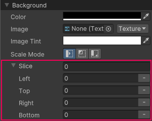

UI Builder doesn’t have a dedicated “image” element. To create an image, do the following:
Import background image into your project.
Create a regular visual element in UI(User Interface) Allows a user to interact with your application. Unity currently supports three UI systems. More info See in Glossary Builder.
Set the element’s background image to the imported image.
When you set the background image, you must select a supported background image types:
TexturesAn image used when rendering a GameObject, Sprite, or UI element. Textures are often applied to the surface of a mesh to give it visual detail. More info See in Glossary
SpritesA 2D graphic objects. If you are used to working in 3D, Sprites are essentially just standard textures but there are special techniques for combining and managing sprite textures for efficiency and convenience during development. More info See in Glossary
Render texturesA special type of Texture that is created and updated at runtime. To use them, first create a new Render Texture and designate one of your Cameras to render into it. Then you can use the Render Texture in a Material just like a regular Texture. More info See in Glossary
SVG Vector images
Note: To use a SVG image as a background for a visual element, you must install a package. To do so, in the Package Manager window, install the package com.unity.vectorgraphics from git URL.
Image import settings
After you have imported an image to your project, for the most intuitive results, Unity recommends you to apply certain import settings for Textures, Sprites, and Vector images before you use them as a background for a visual element in the UI Builder.
Texture
The recommended import settings for a Texture image that you use as a background for a visual element:
MeshThe main graphics primitive of Unity. Meshes make up a large part of your 3D worlds. Unity supports triangulated or Quadrangulated polygon meshes. Nurbs, Nurms, Subdiv surfaces must be converted to polygons. More info See in Glossary Type
Tight
Sprites
The recommended import settings for a Sprite image that you use as a background for a visual element:
Property:
Value:
Texture Type
Sprite (2D and UI)
Compression
None
Alpha Is Transparency
true
Sprite Mode
Multiple if file contains multiple sprites, Single otherwise
Mesh Type
Tight
Vector images
The recommended import settings for a SVG Vector image that you use as a background for a visual element:
All image types are subject to dynamic atlasing if they’re not already in an atlas. (An image is in an atlas if imported as a Sprite with Sprite Mode set to Multiple, or if you have manually added it to a Sprite AtlasA texture that is composed of several smaller textures. Also referred to as a texture atlas, image sprite, sprite sheet or packed texture. More info See in Glossary asset.) You can configure dynamic atlasing in a Panel Settings asset.
9-Slice images with UI Toolkit
Generally, you can only 9-slice a regular 2D Sprite. With UI Toolkit however, you can also 9-slice Texture, Render Texture, and SVG Vector images.
In the Background section in the InspectorA Unity window that displays information about the currently selected GameObject, asset or project settings, allowing you to inspect and edit the values. More info See in Glossary, specify the Left, Right, Top, and Bottom slice values.

Slice options in UI Builder
You can also specify the slice values directly in USS, UXML, or C# files for the following properties:
-unity-slice-left
-unity-slice-right
-unity-slice-top
-unity-slice-bottom
Important:
Slice values set using USS apply only to the image in the associated visual element. The values don’t apply to the same image used in other visual elements, in other UI documents, or in a sceneA Scene contains the environments and menus of your game. Think of each unique Scene file as a unique level. In each Scene, you place your environments, obstacles, and decorations, essentially designing and building your game in pieces. More info See in Glossary.
Unset slice value is zero. For example, if you set the Top,Bottom, and Right slice attributes but leave the Left slice empty, the Left slice is zero.
Slice values set in USS override slice values set in the Sprite Editor. For the example above, no matter what value you added to the Left slice in the Sprite Editor, the Left slice value is zero.